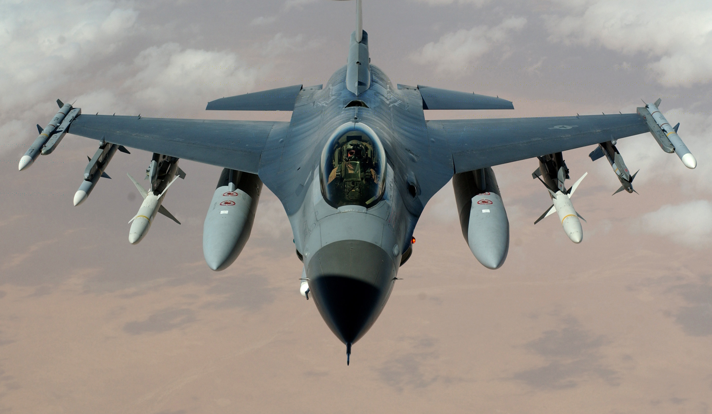
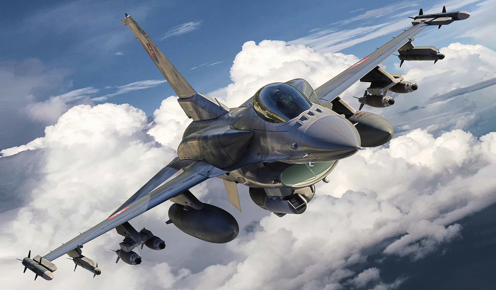
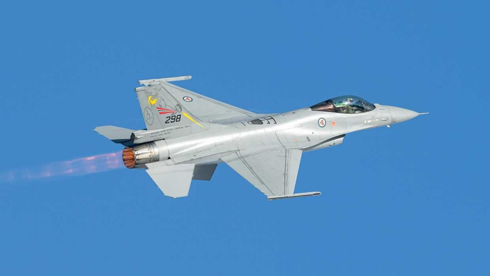

Üdv az oldalamon!
A nevem: Sülle Iván
Kedvenc ételeim:
- Rántott hús
- Gulyásleves
- Brownie
- Almás pite
Hobbiaim
- Számítógépes repülő szimulátorok
- Programozás
- Számítógépes autóverseny szimulátorok
Kedvenc repülőm: F-16



Ha érdekel a repülő, az alsó linkre kattints rá!
Wikipédia-F16